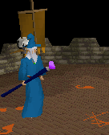
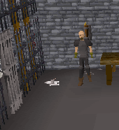
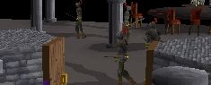
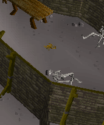
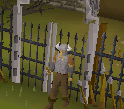
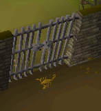
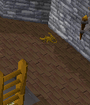
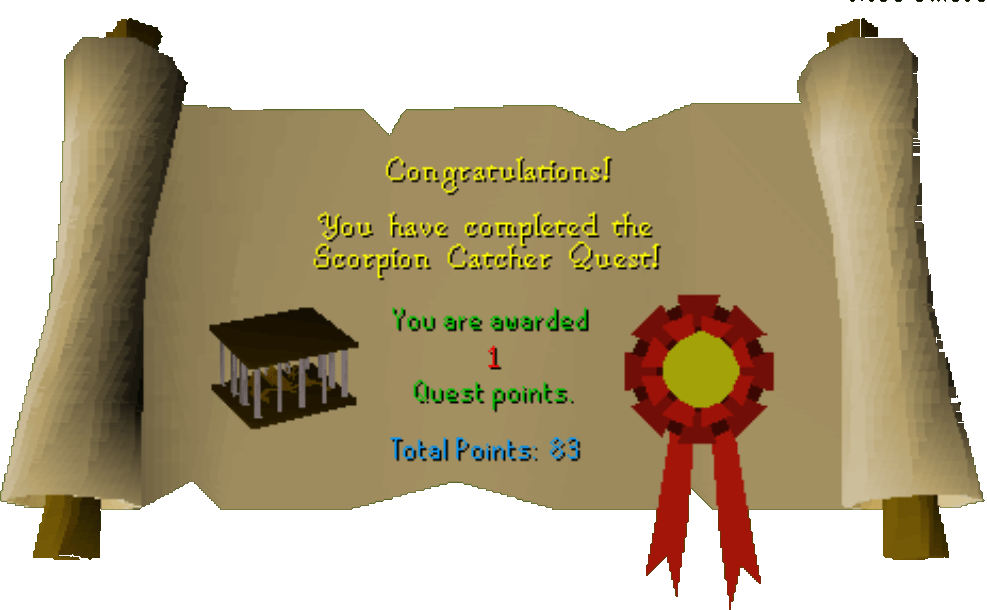

Scorpion Catcher
Description: Thormac has lost his rare lesser kharid scorpions after leaving their cage door open. These scorpions have hidden in areas that are rather difficult to get into. You will have to overcome various challenges (and drink a lot of beer) to get all the scorpions back. If you manage to help him Thormac will improve your battle staffs.Difficulty: Experienced
Length: Long
Items & Skills Needed:
- 31 Prayer
- Completion of Alfred Grimhand's Barcrawl
- The ability to go deep in to the Taverley Dungeon
Reward: 1 Quest point, 6,625 Strength XP, Thormac will enchant battlestaves into mystic staves for 40,000 coins
Instructions:

Speak to Thormac. He tells you that he has lost his scorpions and wants you to get them back. He will give you a cage and tell you that the Seer in Seers Village could help you in locating them. You don't have to go back to the Seer every time in RS2, but I recommend it so you get the full experience of the quest.
First Scorpion
Speak to the Seer and he will tell you that the scorpion is between the Black Demons and Poison Spiders. This is in the Taverley Dungeon.
Go to the bank and get out armor, a weapon, the Dragonfire Shield, an antipoison potion, the scorpion cage, a Dusty Key if you already have it, and food. Head to Taverley and go South. If you are a low combat level you might want to save your energy so you can run past higher-level creatures in the dungeon.


Proceed to the part of the dungeon with the Poison Scorpions. If you need the Dusty Key, instead of going across the bridge to the Chaos Dwarf island continue down the little path to the area with a lot of Black Knights.
Take a left when you can and you will find a jail. Kill the Jail Guard and take his key. Unlock the cell with the explorer in it and talk to him. He will give you the Dusty Key. Go back out to the Poison Scorpions and this time cross the bridge and continue through the dungeon until you get to the door after the Lessers. Use the Dusty Key with the door and go through.
Run past the Blue Dragons if you need to and then continue until you get to Black Demo ns. Run past them and go into an area with Poison Spiders. Look for a wall you can push and come to a room with the scorpion. Use the cage with the scorpion and you've got the first scorpion.

Second Scorpion
Run out of the dungeon and go to the bank and withdraw about 268 gp. The next scorpion is in the Barbarian Outpost. Go west and then north to get to the waterfall. Head north of here and you will find the Outpost. Try to open the gate and a barbarian will tell you only barbarians are allowed in. Tell him you are a barbarian and he will tell you to do the barcrawl.

If you haven't already, complete the barcrawl.
The barbarian will let you in and in the building just infront of the gate, the scorpion is wandering around.

Third Scorpion
The last scorpion is in the Monastery north of Falador. If you have the 31 Prayer, then go right away, go up the ladder and capture the scorpion. If not then train prayer and then go and get him.

When you have all of the Scorpions, head back to the Wizard and he will give you your reward.
Congratulations, Quest Complete!

This quest guide was written by 70347, Firklover, and irish_buddha. Thanks to Funkymetal for corrections.
This quest guide was entered into the database on Sun, May 02, 2004, at 02:08:30 PM by Cav103 and CJH and was last updated on Mon, Aug 02, 2004, at 08:36:41 AM.